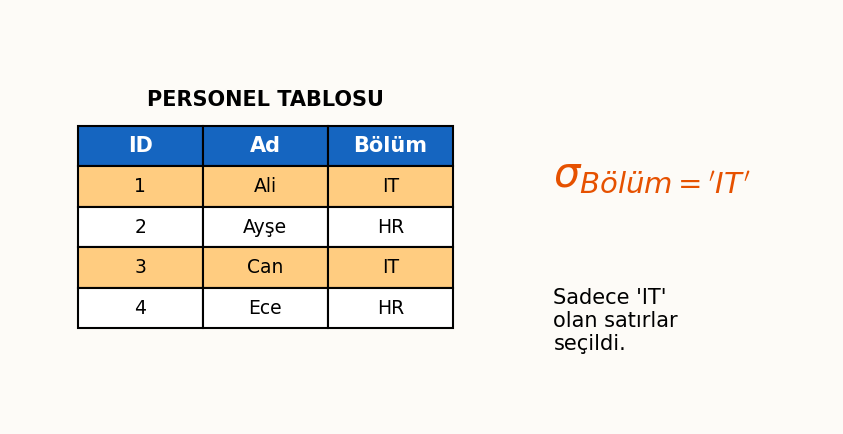
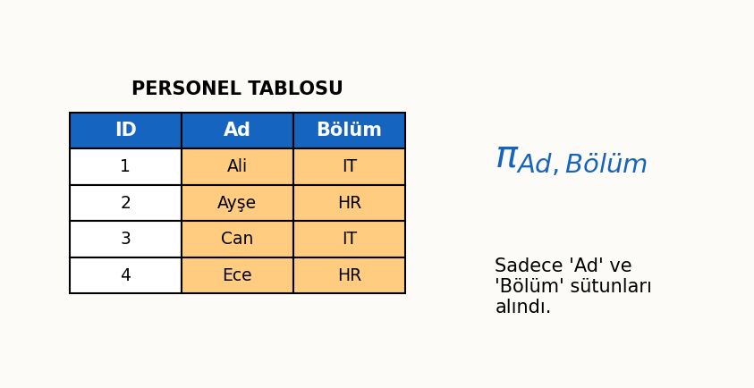
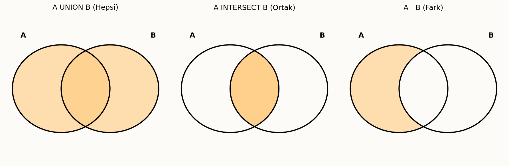
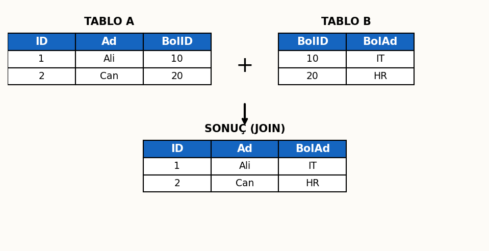

İlişkisel Cebir ve SQL Temelleri
Bu bölüm; veritabanı sorgulama dillerinin teorik altyapısını oluşturan İlişkisel Cebir (Seçme, Yansıtma, Birleşim, Kesişim, Kartezyen Çarpım) işlemlerini ve bu teorinin pratiğe dökülmüş hali olan SQL (Structured Query Language) dilinin temel komutlarını (SELECT, WHERE, Operatörler) kapsamaktadır. Veri sorgulama, filtreleme ve manipülasyon teknikleri detaylı örneklerle ele alınmıştır.
1. İlişkisel Cebir (Relational Algebra)
İlişkisel Cebir, SQL gibi modern sorgu dillerinin teorik temelini oluşturan, ilişkisel veritabanları için geliştirilmiş prosedürel bir sorgu dilidir. Veriyi tablolardan (ilişkilerden) alır, işlemlerden geçirir ve sonuç olarak yeni bir tablo üretir.
Temel İşlemler (Unary Operations)
Bu işlemler tek bir ilişki (tablo) üzerinde uygulanır.
Seçme İşlemi (Selection - $\sigma$)
Seçme işlemi, bir ilişkiden belirli bir koşulu sağlayan satırları (kayıtları) ayıklar. İlişkisel veritabanındaki WHERE mantığına karşılık gelir.

Formül ve Tanım
$$R_{sonuç} = \sigma_{koşul}(R)$$
- $R$: Kaynak ilişki (tablo).
- $koşul$: Satırlar üzerinde uygulanan mantıksal ifade (Örn: $Maas > 50000 \land Bolum = 'Bilgisayar'$).
- Seçme işlemi, tablonun şemasını (sütunlarını) değiştirmez.
Projeksiyon / Yansıtma İşlemi (Projection - $\pi$)
Projeksiyon işlemi, bir ilişkiden belirli bir sütun kümesini seçer. SQL'deki SELECT ifadesindeki sütun listesine karşılık gelir.

Önemli Kural
$$R_{sonuç} = \pi_{sütunlar}(R)$$
- $\pi$ işlemi otomatik olarak tekrar eden kayıtları (duplicate tuples) atar ve sonuçta sadece farklı kayıtları döndürür. Bu, ilişkisel cebirin küme tabanlı olmasından kaynaklanır.
Küme İşlemleri (Set Operations)
Bu işlemler, küme teorisinden miras alınmıştır ve sonuçları uygulamak için ilişkilerin uyumlu (compatible) olması gerekir. Uyumlu olmak demek:
- İki ilişkinin de aynı sayıda sütuna sahip olması.
- Karşılıklı sütunların (aynı sırada) aynı etki alanına (domain) veya uyumlu veri tipine sahip olması.

Birleştirme (Union - $\cup$)
İki uyumlu ilişkinin ($R$ ve $S$) tüm kayıtlarını içeren yeni bir ilişki üretir. Tekrar eden kayıtlar atılır.
$$R \cup S$$
Kesişme (Intersection - $\cap$)
İki uyumlu ilişkinin ($R$ ve $S$) sadece ortak kayıtlarını içeren yeni bir ilişki üretir.
$$R \cap S$$
Fark (Difference - $-$)
$R$ ilişkisinde olup, $S$ ilişkisinde olmayan kayıtları içeren yeni bir ilişki üretir. $S - R$ işlemi $R - S$'ten farklıdır.
$$R - S$$
Kartezyen Çarpım (Cartesian Product - $\times$)
İki ilişki ($R$ ve $S$) üzerinde uygulanır ve $R$'deki her bir satırın, $S$'deki her bir satırla eşleştiği (kombine edildiği) yeni bir ilişki üretir.
Dikkat
$$R \times S$$
- Sonuç ilişkisinin sütun sayısı, $R$ ve $S$'nin sütun sayılarının toplamıdır.
- Satır sayısı, $R$ ve $S$'nin satır sayılarının çarpımıdır: $|R_{sonuç}| = |R| \ast |S|$.
- Kartezyen çarpım tek başına anlamlı değildir; genellikle $\sigma$ (Seçme) işlemi ile koşullandırılarak (Örn: $R.A = S.B$) join işlemi simüle edilir.
Birleştirme ve Diğer İşlemler
Doğal Birleştirme (Natural Join - $\bowtie$)
Kartezyen çarpım ve seçme işlemini birleştiren, türetilmiş bir işlemdir. İki ilişkiyi, aralarındaki ortak isme sahip sütunlar üzerinden eşitlik koşuluyla birleştirir.
$$R \bowtie S$$
- Çalışma Prensibi:
- $R$ ve $S$ üzerinde Kartezyen Çarpım ($R \times S$) yapılır.
- Ortak özniteliklerin değerlerinin eşit olduğu $(\sigma_{R.A = S.A \land \dots})$ satırlar seçilir.
- Seçilen satırlardan, yinelenen ortak sütunların biri ($\pi$) atılır.

Bölme (Division - $\div$)
Bölme işlemi, kartezyen çarpımın tersi olarak düşünülebilir. Özellikle "hepsini yapan" veya "tüm özellikleri taşıyan" kayıtları bulmak için kullanılır.
Bölme Tanımı
$R \div S$ işlemi, $R$'nin öyle bir öznitelik kümesini ($X$) döndürür ki, $X$'in her bir değeri, $S$'nin sahip olduğu tüm öznitelik ($Y$) değerleriyle $R$ içinde ilişkilidir.
- Örnek Sorgu: "Tüm dersleri alan öğrencilerin listesi."
2. SQL (Structured Query Language) Giriş
SQL (Yapısal Sorgu Dili), ilişkisel veritabanlarını yönetmek ve veri manipülasyonu yapmak için kullanılan ANSI standardı bir dildir.
SQL Kategorileri (DDL, DML, DCL - Kısa Tanımlar)
SQL komutları işlevlerine göre üç ana kategoriye ayrılır:
- DDL (Data Definition Language - Veri Tanımlama Dili): Veritabanı nesnelerini (tablo, index, view) oluşturur ve yapılandırır.
- Komutlar:
CREATE,ALTER,DROP,TRUNCATE.
- Komutlar:
- DML (Data Manipulation Language - Veri İşleme Dili): Veriler üzerinde işlem yapar.
- Komutlar:
SELECT,INSERT,UPDATE,DELETE.
- Komutlar:
- DCL (Data Control Language - Veri Kontrol Dili): Erişim haklarını ve güvenliği yönetir.
- Komutlar:
GRANT(Yetki ver),REVOKE(Yetki al).
- Komutlar:
3. SQL Komutlar ve İşlemler
SELECT ve Sorgulama İşlemleri
Veritabanından veri çekmek için kullanılan en temel komuttur.
Temel Kalıp:
SELECT Sütun1, Sütun2 FROM TabloAdi;
Not: Tüm sütunları çekmek için yıldız (*) kullanılır.
SELECT * FROM Personel;
DISTINCT İfadesi (Tekrarları önleme)
Bir sütundaki tekrar eden verileri eleyerek sadece benzersiz (unique) değerleri listeler.
Örnek: Hangi şehirlerde personelimiz var? (Tekrarı önler)
SELECT DISTINCT Sehir FROM Personel;
AS İfadesi (Alias - Takma Ad verme)
Sütunlara veya tablolara geçici olarak daha okunabilir isimler vermek için kullanılır.
SELECT Ad AS Isim, Soyad AS Soyisim FROM Personel;
Matematiksel İşlemler (Sütunlar arası dört işlem)
Sorgu sonucunda, veritabanında saklanmayan ancak hesaplanan veriler gösterilebilir. Çarpma işlemi için \ast sembolü kullanılır.
Örnek: Maaşlara %10 zam yapılmış halini görüntüle
SELECT Ad, Maas, (Maas \ast 1.10) AS ZamliMaas FROM Personel;
WHERE ve Seçim Kriterleri
Sorgulanan verileri belirli koşullara göre filtrelemek için kullanılır. Sadece koşulu TRUE olan satırlar listelenir.
Karşılaştırma ve Mantıksal İşleçler
- Karşılaştırma:
=(Eşit),<>veya!=(Eşit Değil),<,>,<=,>=. - Mantıksal:
AND(Ve),OR(Veya),NOT(Değil).
Örnek: Maaşı 5000'den büyük OLAN VE Bölümü 'IT' OLAN personeli getir
SELECT * FROM Personel
WHERE Maas > 5000 AND Bolum = 'IT';
NULL (Boş) Değerler ile İlgili İşlemler (IS NULL, IS NOT NULL)
Veritabanında bir alanın boş olması (NULL), sıfır veya boşluk karakterinden farklıdır; "değer yok" anlamına gelir.
Kritik Sınav Bilgisi: NULL Kontrolü
NULL değerler aritmetik operatörlerle (= NULL) kontrol edilemez. Mutlaka IS NULL veya IS NOT NULL kullanılmalıdır.
Yanlış Kullanım: SELECT * FROM Personel WHERE Telefon = NULL;
Doğru Kullanım: SELECT * FROM Personel WHERE Telefon IS NULL;
BETWEEN İşleci (Aralık sorgulama)
Belirli bir aralıktaki değerleri (sınırlar dahil) seçer.
Örnek: Maaşı 3000 ile 5000 arasında olanlar (3000 ve 5000 dahil)
SELECT * FROM Personel
WHERE Maas BETWEEN 3000 AND 5000;
IN İşleci (Liste içi arama)
Bir değerin, verilen bir liste içinde olup olmadığını kontrol eder. OR zinciri kurmanın kısa yoludur.
Örnek: Şehri Ankara, İstanbul veya İzmir olanlar
SELECT * FROM Personel
WHERE Sehir IN ('Ankara', 'İstanbul', 'İzmir');
LIKE İşleci (Pattern Matching)
Metin içinde desen arama (wildcard search) yapar.
%: Sıfır veya daha fazla karakteri temsil eder._: Tek bir karakteri temsil eder.
Örnek: İsmi 'A' ile başlayanlar
SELECT * FROM Personel WHERE Ad LIKE 'A%';
Örnek: İsminin ikinci harfi 'e' olanlar
SELECT * FROM Personel WHERE Ad LIKE '_e%';
Örnek: İsminin içinde 'can' geçenler
SELECT * FROM Personel WHERE Ad LIKE '%can%';
Veri Tipleri ve Özel Durumlar
Karakter Türü Verilerin Karşılaştırılması
Karakter verileri sorgulanırken genellikle tırnak işareti ('...') kullanılır.
Case Sensitivity (Büyük/Küçük Harf)
SQL standartlarında genellikle büyük/küçük harf duyarlılığı VTYS ayarına (Collation) bağlıdır. Ancak Ad = 'ali' ile Ad = 'ALI' bazı sistemlerde farklı sonuç verebilir.
Tarihsel Karşılaştırma (Formatlar)
Tarih formatları VTYS'ye göre değişmekle birlikte standart format genellikle 'YYYY-MM-DD' şeklindedir.
Örnek: 2023 yılından sonra işe girenler
SELECT * FROM Personel WHERE IseGirisTarihi > '2023-01-01';
Türkçe Karakter ve Alan İsmi Kuralları
Tablo ve sütun isimlendirmelerinde Türkçe karakter (ğ, ü, ş, ı, ö, ç) ve boşluk kullanılması önerilmez. Eğer kullanılırsa köşe parantezi [Müşteri Adı] veya çift tırnak "Müşteri Adı" içine alınması gerekir.
ORDER BY (Sıralama)
Sorgu sonuçlarını belirli bir sütuna göre sıralar. Varsayılan sıralama artandır (ASC).
- ASC (Ascending): Artan (A-Z, 0-9).
- DESC (Descending): Azalan (Z-A, 9-0).
Örnek: Önce Bölüme göre artan, sonra Maaşa göre azalan sırala
SELECT Ad, Bolum, Maas FROM Personel
ORDER BY Bolum ASC, Maas DESC;